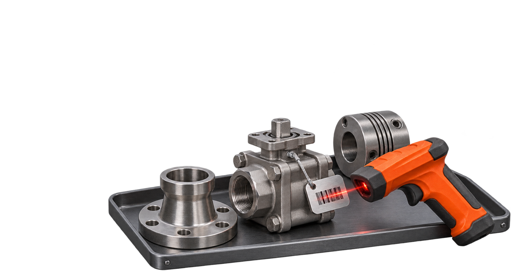
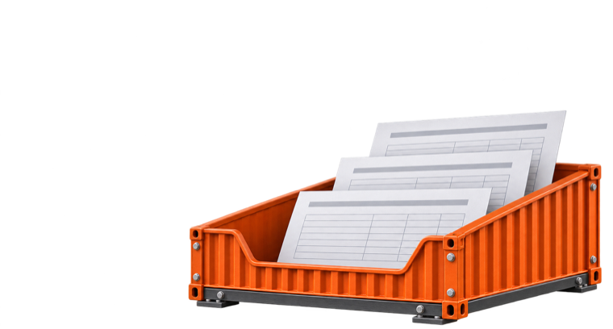
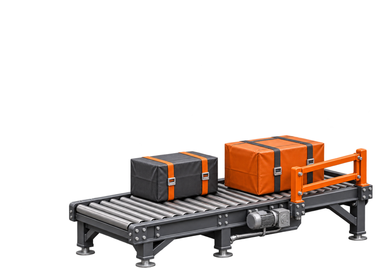

Connecting Businesses
with Supply Opportunities
I Supply is a B2B sourcing and procurement facilitation initiative by tkml Systems.
Our Focus
B2B Sourcing &

Request for Quotation
(RFQ) Coordination
Supplier & Buyer
Communication
Commercial Negotiation
Support

Procurement Process
Coordination
Structured sourcing.
Clear coordination.
Our mission is to simplify the way businesses connect with suppliers through structured sourcing, commercial coordination, and transparent communication.
Starting in Libya, I Supply aims to support companies in identifying suitable suppliers, obtaining quotations, and coordinating commercial transactions.
Current Status
In Development
Developed by tkml Systems
Standards Before Transactions.
Contact Us to Learn More